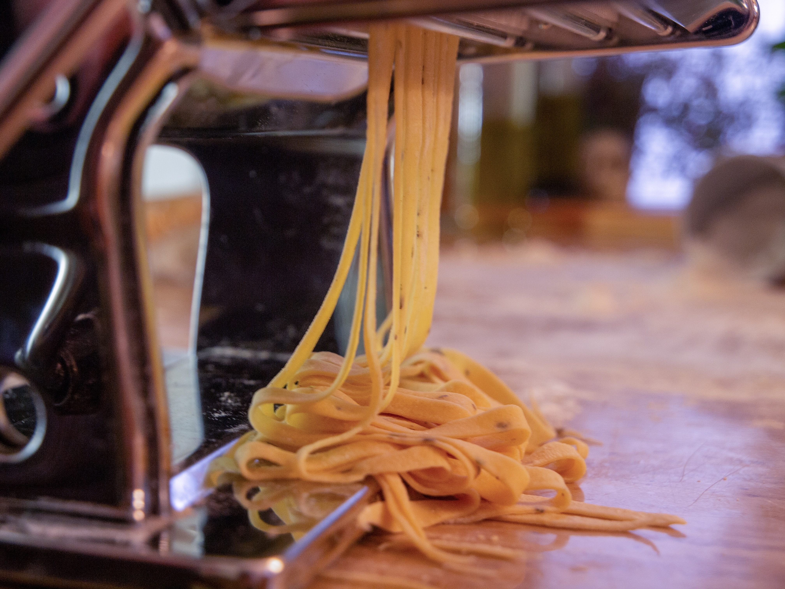

Chocolate Cake
- 1 cup all purpose flour, sifted
- 1/3 cup unsweetened cocoa powder
- 1/2 tsp salt
- 1/4 tsp baking powder
- 1/4 tsp baking soda
- 3/4 cup (1 1/2 sticks) unsalted butter
- 1 cup sugar
- 1/3 cup (packed) dark brown sugar
- 3 large eggs
- 1/2 cup buttermilk
- Preheat oven to 350°F.
- Butter a 9-inch cake pan with 2-inch high sides. (You can line the bottom with parchment paper, or spray the pan with Pam.)
- Whisk the first 5 ingredients in a medium bowl to blend.
- Using an electric mixer, beat the butter in a large bowl, until light and fluffy.
- Gradually beat in both sugars, then the vanilla.
- Add the eggs one at a time, beating well after each addition.
- Slowly beat in the dry ingredients alternately with buttermilk, in 2 additions each.
- Transfer the batter to the prepared pan.
- Bake the cake until a tester inserted into the center comes out clean, about 1 hour.
Fresh Pasta
- 300g "00" flour
- 3 eggs
- 1-2 tbsp extra virgin olive oil
- a little water (if needed to bind the dough)
- extra flour, for dusting (ap flour is fine)

- Sift the flour onto your work surface to create a small mound.
- In the center, form a hole and add your eggs. Whisk the eggs, slowly incorporating a little more flour each time.
- Form it into a disc shape and wrap it in plastic wrap.
- Refrigerate for one hour.